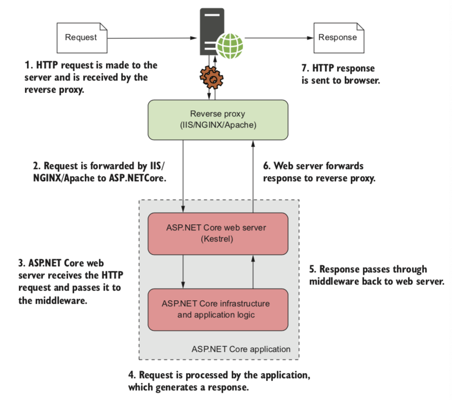

 ASP.NET Core应用程序如何处理请求，反向代理收到浏览器的一个请求，该请求将请求传递给运行自托管Web服务器的ASP.NET Core应用程序。Web服务器处理该请求，并将其传递到应用程序主体，该主体生成响应并将其返回给Web服务器，Web服务器将此请求发送到返回给反向代理，反向代理将响应发送到浏览器。
对用户而言，此过程视乎与图1.7中所示的通用HTTP请求相同，用户发送了HTTP请求并收到了HTTP响应。所有的差异都在服务器端，在我们的应用程序中。
您可能会认为拥有反向代理和Web服务器有些多余，为什么不能只有一个?好吧，好处之一是您的应用程序与底层操作系统脱钩。相同的ASP.NET Core Web 服务器Kestrel可以跨平台使用，并且可以在各种代理之后使用，而无需特定实现进行任何限制，另外，如果您编写了新的ASP.NET Core Web服务器，则可以用它代替Kestrel，而无需更改应用程序的任何其他内容。
反向代理的另一个好处是可以增强它以抵抗来自公共互联网的潜在威胁，他们通常负责其他方面，例如重新启动已经崩溃的进程。当在返乡代理服务器后面使用Kestrel时，他可以简单的重新启动已崩溃的进程。当在反向代理服务器后面使用Kestrel时，它可以作为简单的HTTP服务器使用而不必担心这些额外的功能。可以将其视为简单的关注点分离；Kestrel关注生成HTTP响应；反向代理与处理Internet的连接有关。
您已经了解了如何在ASP.NET Core应用程序中找到请求和响应，以及如何从ASP.NET Core应用程序中找到请求和响应，但是我还没有涉及如何生成响应，在本书的第1部分中我们将研究构成典型的ASP.NET Core应用程序的组件，以及他们如何组合在一起，在ASP.NET Core中生成响应同程需要花费一秒钟的时间，但是在本书中，我们将逐步逐步完成一个应用程序，详细介绍了每个组件。
在深入研究之前，您需要为了第一个ASP.NET Core应用程序选择一个基础平台，并建立一个用于构建该平台的开发环境。
1.4 为ASP.NET Core选择平台
ASP.NET Core与.NET Core一起开发的，并且经常在同一口中提到，因此很容易忘记ASP.NET Core与平台无关。您可以在.NET Core或.NET Framework上构建和运行ASP.NET Core应用程序。在这两种情况下都将提供相同的功能，那么为什么您要选择一个以上的功能呢？哪种方法足以适合您，取决于您的历史使用记录和要构建的应用程序，因此在本节中，我重点介绍了一些需要考虑的优点和缺点。
1.4.1 使用.NET Framework的优点
以前.NET Framework最重要的优势之一是他的成熟度——他已经开发了16年，经过了不断的努力和广泛的部署，对于某些人来说，这种成熟度将是一个重要的决定因素，他已经安装在您的服务器上，并且在顶部构建ASP.NET Core对您现有的环境的风险很小
对于其他人，尤其是现有的ASP.NET Core开发人员而言，跨平台且对容器友好的.NET Core不会具有吸引力，根据需要，这些开发人员将习惯于部署到Windows服务器，并且继续这样做，同时仍然充分利用ASP.NET Core提供的所有有优势是完全合理的。
首次发布.NET Core时，坚持使用以前的.NET Framework的最大原因是，您需要使用Windows特定的功能，例如注册表或目录服务，此后Microsoft发布了一个兼容性包，是这些API在.NET Core中可用，但仅在Windows而不是Linux或macOS上运行.NET Core时才可以用.如果您知道您的应用程序依赖于许多仅Windows功能，那么.NET Framework可能是最简单的选择。